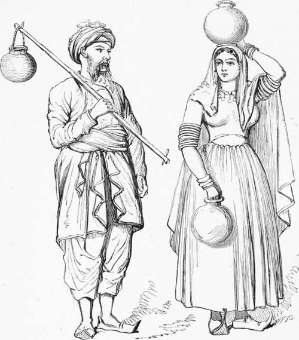

Chapter XVI. Part 3
Description
This section is from the book "Hog Hunting In The East, And Other Sports", by J. T. Newall. Also available from Amazon: Hog Hunting in the East, and Other Sports.
Chapter XVI. Part 3
** Appendix, Note G.
" Yes, I should doubt any man being able to meet the onset of a charging boar of fair size and weight without being upset," said Melton. "The very impetus of the beast even if killed on the spot, a very unlikely occurrence would carry him against a man standing in front.
" I once saw a friend of mine, though, pin a boar on foot and finish it," Stewart observed. " The beast had been wounded and shut up in a hedge. It had shown no pluck and died a cur, for it never made an attempt to charge, but was pinned by its assailant and disposed of."
" Wild boars," said Hawkes, " are on the whole, I think, about as plucky creatures as are to be found, but there are certainly exceptions. Last year we killed a boar at this very place who was one of them.
" It was during the monsoon, and we pugged him from the midan (open country or plain) towards the hills. He was roused in a nullah near their foot, and rattled away into them. Being a heavy old brute he did not make much of a run, and was slightly speared on the hill-side. There he shut up; and though hardly hurt, made not the slightest resistance. One after another of us got at him on horseback and speared without his attempting to charge, till he died, one of the poorest in spirit of his kind I ever assisted in killing."
" Ay, but it would be trusting to a broken reed to rely commonly on such a want of pluck," said Mowbray. " Some will charge apparently for charging's sake, without any provocation. I have had a boar come down upon me from a distance of a hundred yards after charging a led horse, which he went out of his way to attack, and I have frequently known them leave their line to go at any stray bullock or two which may be near it. A single man, or even more, in a field ploughing, or otherwise peaceably engaged, runs no little risk too."
"Yes," rejoined Stewart, "that is true when the boar's ire is roused by being hunted or driven from his comfortable day-quarters. Sometimes, however, cattle turn the tables on him. I once saw a capital case in point.
" We were hunting the Vinjule jungle near Ahmed-abad, and several pig being astir and the jungle to some extent rideable, the riders had got much scattered after the various animals scuttling about. However, I got away after a nice, speedy hog, who took across the small river near the jungle, and there I lay into him. He crossed and recrossed the river, and at last led me through some nullahs towards a bit of open pasture land in the direction of some high fields. I lost sight of him for a brief space in a nullah, but was redirected to his line by the movements of a herd of cattle, some of whom, greatly excited, were actually scampering after the hog, and otherwise showing signs of animosity towards him on their part. He had left the nullah and passed close to some perhaps charged them. At any rate, they resented his intrusion, and themselves became the assailants. Some of the cattle continued to gallop on in his line even after he had passed, and seemed half-inclined to turn their attentions to me as I came up. Unfortunately, I lost the boar after all. I ran him into a high field of toore, I think it was, and there closed; but the pig jinked, stopped dead, passed my horse, and I never saw him again. We found afterwards that he had turned back and returned to the jungle ; so no wonder I missed him, as I rode on, looking about on either side.
" I have seen a precisely similar case of a hunted pig entering a herd of cattle," said Hawkes ; " and I cannot help thinking that the boar went in among them with the object of throwing me off by having my attention distracted. I killed him, however, soon after two or three dogs belonging to the Eabarree owners of the cattle being present. Very jolly fellows those Eabarrees are. I went to their little encampment, which was close at hand, and asked for a drink of milk. This they at once produced, and allowed me to take as long a pull as I wished, and yet never asked me for any remuneration. They seemed much interested in my shikar also."
" What people are they ?" asked Mowbray. " Do they live in the province ?"
Kabarrees.
" They belong to a pastoral nomadic tribe," Stewart said, " and change their ground according to the season and the prevalence of grass and water. I believe they have villages, inhabited by themselves alone ; but they usually remain near their flocks in small encampments of a few families, living in temporary huts or tents. I have heard that there is a good deal of wealth among them, which is chiefly invested in women's ornaments, and they are well clad and comfortably off according to appearances. Most of the immense flocks which feed on the waste lands in Cutch belong to them, and they pay as tribute or tax, I believe, so much for each pot of ghee manufactured from the milk, and probably a certain amount per head of cattle. They came, I think, originally from Scinde, and still visit it at certain seasons. As Hawkes relates, they are very hospitably inclined. I have more than once come across their little encampments in out-of-the-way places when benighted, and found them very civil. They can often give good hints about the game and the jungle haunts, too."
" I should like to form their acquaintance," Mowbray remarked. " To return, however, to the subject of spearing pigs on foot. I once saw a man have a regular set-to with a sow which he had approached.
" One of the meets of the old ' Poona Hunt' was at the village of Kassersai, above which towers a high range of hills. The latter is one of those lateral spurs which jut out into the plain from the mountainous region which, under the name of the ' Ghauts,' runs down the western coast of India. In the neighbourhood of Poona, on the eastern side, some of these thrust their slopes into the high and rugged table-land of the Deccan, till they become gradually lost in, or assimilated with, it. On the western side the mountains overlook the narrow tract of the Concan, which lies between them and the sea. From that base they rise with so abrupt a front as, in some places, to be precipitous for thousands of feet for they soar to an extreme height of between four and five thousand.
Continue to: